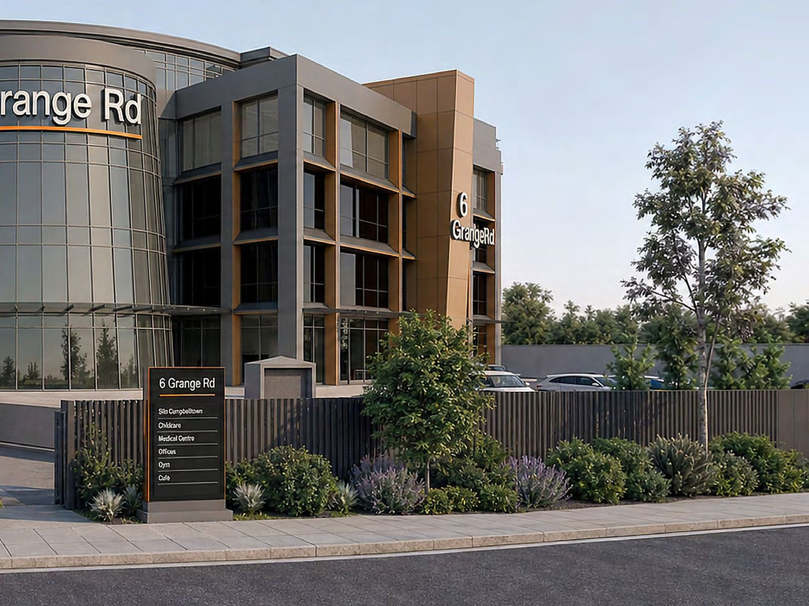
Strata-titled micro-warehouses and storage units in the heart of Sydney's South-West growth corridor.
시드니 남서부 성장 회랑 중심부에 들어서는 스트라타 등기 마이크로 창고 & 스토리지 유닛.
位于悉尼西南增长走廊核心的独立产权微型仓库与仓储单元。
位於悉尼西南增長走廊核心的獨立產權微型倉庫與倉儲單元。
Request Information / 분양 문의 분양 문의하기 →咨询详情 →諮詢詳情 →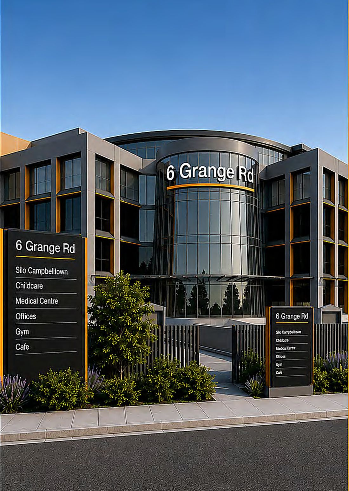
Silo Campbelltown is the latest project from Silo Storage Group, following completed facilities in Wollongong, Huskisson, Nowra and Oran Park. Purpose-built at 6 Grange Rd, it delivers secure, modern micro-warehouse and storage space to one of NSW's fastest-growing residential and business catchments.
Silo Campbelltown은 울런공, 허스키슨, 나우라, 오란파크에서 시설을 완공한 Silo Storage Group의 최신 프로젝트입니다. 6 Grange Rd에 목적 설계로 지어지며, NSW에서 가장 빠르게 성장하는 주거·비즈니스 상권 중 한 곳에 안전하고 현대적인 마이크로 창고 및 스토리지 공간을 공급합니다.
Silo Campbelltown 是 Silo Storage Group 的最新项目，此前已在 Wollongong、Huskisson、Nowra 与 Oran Park 完成多个设施。项目于 6 Grange Rd 专门设计建造，为 NSW 增长最快的住宅与商业腹地之一提供安全现代的微型仓库与仓储空间。
Silo Campbelltown 是 Silo Storage Group 的最新項目，此前已在 Wollongong、Huskisson、Nowra 與 Oran Park 完成多個設施。項目於 6 Grange Rd 專門設計建造，爲 NSW 增長最快的住宅與商業腹地之一提供安全現代的微型倉庫與倉儲空間。
Each unit is individually titled under a strata arrangement, so owners receive a Certificate of Title on settlement — the same as any other real property purchase in NSW. Units suit owner-occupiers who need working space as much as investors seeking a compact, low-maintenance industrial asset.
각 유닛은 스트라타 방식으로 개별 등기되어, 결제(settlement) 시 NSW의 다른 부동산 매입과 동일하게 소유권 증서(Certificate of Title)를 받게 됩니다. 실제 작업 공간이 필요한 실사용자는 물론, 관리 부담이 적은 소형 산업용 자산을 찾는 투자자에게도 적합합니다.
每个单元均以分契产权（Strata Title）独立登记，交割时可取得与 NSW 其他不动产购置相同的产权证书（Certificate of Title）。既适合需要实际作业空间的自用者，也适合寻求管理省心的小型工业资产的投资者。
每個單元均以分契產權（Strata Title）獨立登記，交割時可取得與 NSW 其他不動產購置相同的產權證書（Certificate of Title）。既適合需要實際作業空間的自用者，也適合尋求管理省心的小型工業資產的投資者。
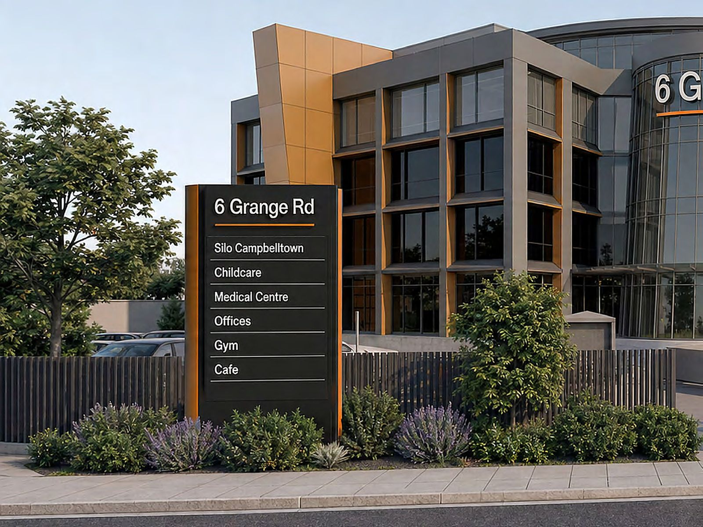
As a mixed-use destination, 6 Grange Rd draws a varied flow of people through the site every day. That activity lifts the building's profile, visibility and demand — supporting occupancy and long-term value across the estate.
복합용도 건물인 6 Grange Rd에는 매일 다양한 방문객이 오갑니다. 이러한 유동인구는 건물의 인지도와 가시성, 수요를 끌어올려 임대율과 장기적인 자산 가치를 뒷받침합니다.
作为综合用途建筑，6 Grange Rd 每日迎来各类访客。这股人流提升了建筑的知名度、曝光度与需求，为出租率与长期资产价值提供支撑。
作爲綜合用途建築，6 Grange Rd 每日迎來各類訪客。這股人流提升了建築的知名度、曝光度與需求，爲出租率與長期資產價值提供支撐。
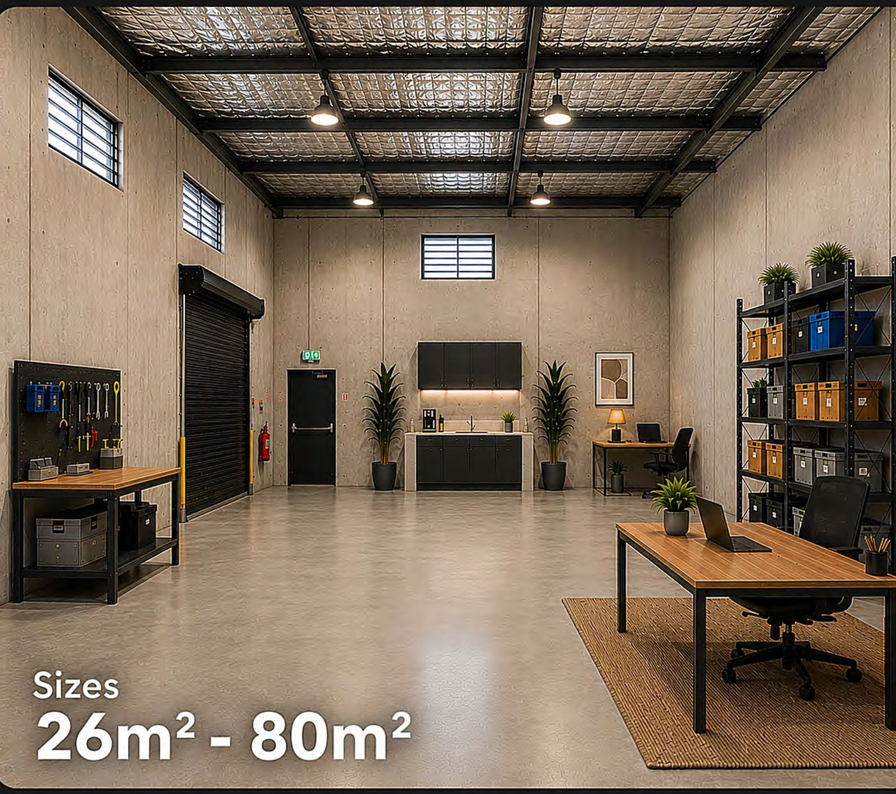
Drive-in units built for trades, e-commerce operators and small businesses that have outgrown the garage — with the height, power and access to run a real operation.
차량 진입이 가능한 유닛으로, 창고가 좁아진 트레이드·이커머스·소상공인을 위해 설계되었습니다. 실제 사업 운영이 가능한 층고와 전력, 출입 환경을 갖추었습니다.
车辆可直接驶入的单元，专为车库已不敷使用的技术工种、电商与小微企业而设计。具备可实际经营业务的层高、电力与出入条件。
車輛可直接駛入的單元，專爲車庫已不敷使用的技術工種、電商與小微企業而設計。具備可實際經營業務的層高、電力與出入條件。
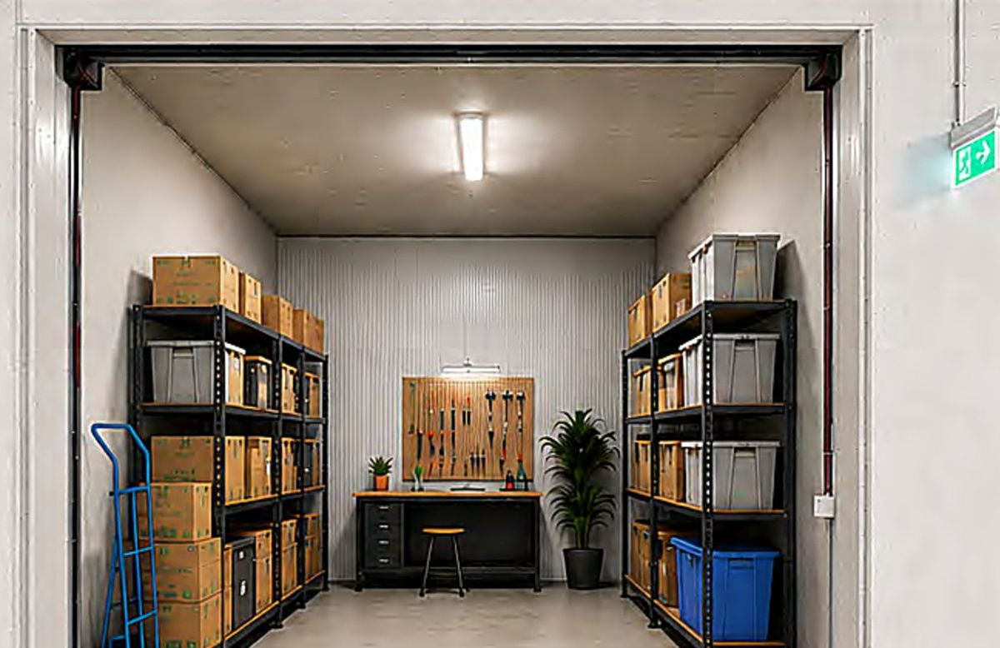
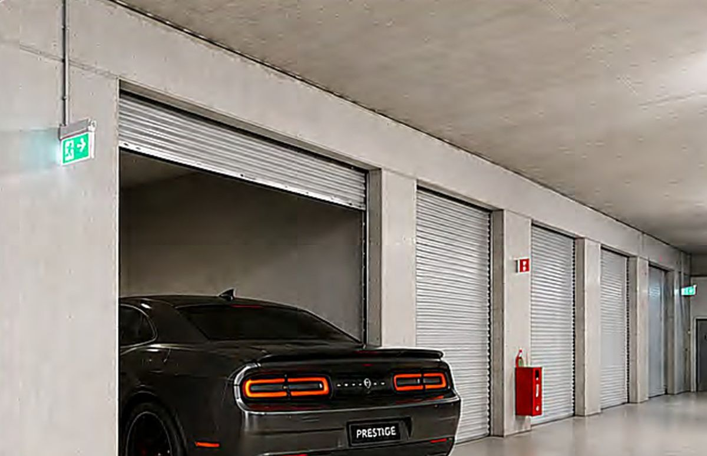
Artist Impression
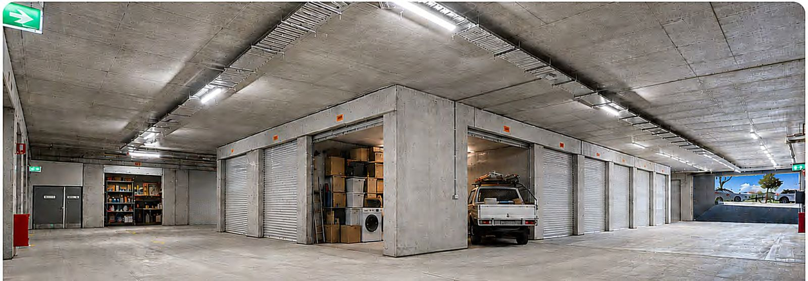
Internal corridors, large goods lifts and generous parking make loading and unloading straightforward in any weather.
실내 통로와 대형 화물 리프트, 넉넉한 주차 공간으로 날씨와 관계없이 편리하게 상·하차할 수 있습니다.
室内通道、大型货梯与充裕停车位，让装卸货不受天气影响。
室內通道、大型貨梯與充裕停車位，讓裝卸貨不受天氣影響。
Compact, individually titled units from half-garage size up — ideal for tradies, online retailers, collectors and households that simply need more room.
반 차고 크기부터 시작하는 소형 개별 등기 유닛. 트레이드, 온라인 리테일러, 컬렉터, 그리고 단순히 공간이 더 필요한 가정에 적합합니다.
自半个车库大小起的小型独立产权单元。适合技术工种、网店经营者、收藏爱好者，以及单纯需要更多空间的家庭。
自半個車庫大小起的小型獨立產權單元。適合技術工種、網店經營者、收藏愛好者，以及單純需要更多空間的家庭。
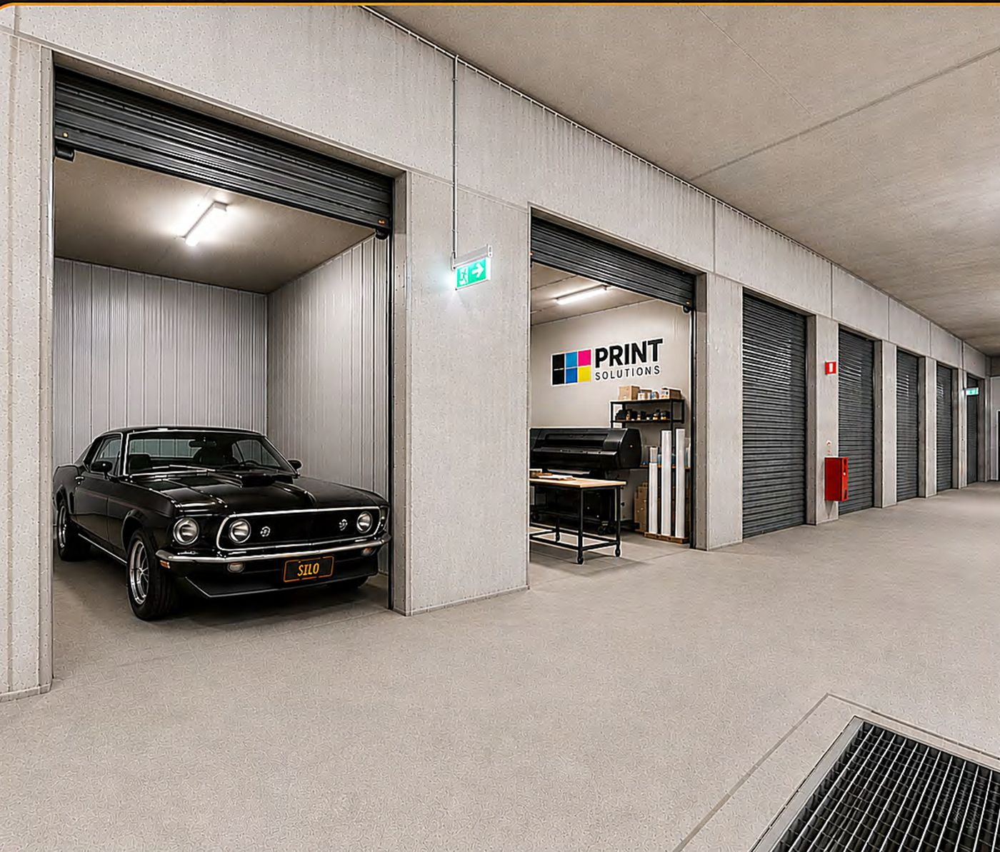
Tenant profiles observed across Silo's completed facilities in Wollongong, Huskisson, Nowra and Oran Park.
울런공, 허스키슨, 나우라, 오란파크의 기존 Silo 시설에서 확인된 실제 임차인 유형입니다.
以下为 Wollongong、Huskisson、Nowra 与 Oran Park 既有 Silo 设施中实际出现的租户类型。
以下爲 Wollongong、Huskisson、Nowra 與 Oran Park 既有 Silo 設施中實際出現的租戶類型。
Electricians, plumbers and builders storing tools, materials and vehicles close to job sites.
전기·배관·건축 시공업자가 현장 인근에 공구, 자재, 차량을 보관합니다.
电工、水管工与建筑商在工地附近存放工具、材料与车辆。
電工、水管工與建築商在工地附近存放工具、材料與車輛。
Online sellers running inventory, packing and dispatch from a single secure unit.
온라인 셀러가 재고 보관부터 포장·출고까지 한 유닛에서 처리합니다.
网店卖家在同一单元内完成库存存放、包装与发货。
網店賣家在同一單元內完成庫存存放、包裝與發貨。
Collectors and motorbike enthusiasts wanting secure, weather-protected garaging.
보안과 날씨 보호가 되는 차고를 원하는 컬렉터와 모터바이크 애호가.
寻求安全且遮风挡雨车库的收藏者与摩托车爱好者。
尋求安全且遮風擋雨車庫的收藏者與摩托車愛好者。
Professional firms storing records and business equipment off-site but close by.
전문직 사무소가 기록물과 사무 장비를 가까운 외부 공간에 보관합니다.
专业事务所将档案与办公设备存放于就近的场外空间。
專業事務所將檔案與辦公設備存放於就近的場外空間。
Downsizers, growing families and renovators storing furniture and seasonal items.
다운사이징 가구, 자녀가 늘어난 가정, 리노베이션 중인 가정의 가구·계절용품 보관.
换小房家庭、成员增加的家庭及装修中的家庭，存放家具与季节性物品。
換小房家庭、成員增加的家庭及裝修中的家庭，存放傢俱與季節性物品。
Caravans, boats, trailers and recreational equipment kept secure year-round.
카라반, 보트, 트레일러, 레저 장비를 연중 안전하게 보관합니다.
房车、船艇、拖车与休闲装备全年安全存放。
房車、船艇、拖車與休閒裝備全年安全存放。
Positioned minutes from Campbelltown's established residential, commercial and industrial precincts, with direct frontage to a major arterial road.
캠벨타운의 기존 주거·상업·산업 지구에서 몇 분 거리에 위치하며, 주요 간선도로에 직접 면해 있습니다.
距 Campbelltown 既有住宅、商业与工业片区仅数分钟，并直接临主干道。
距 Campbelltown 既有住宅、商業與工業片區僅數分鐘，並直接臨主幹道。
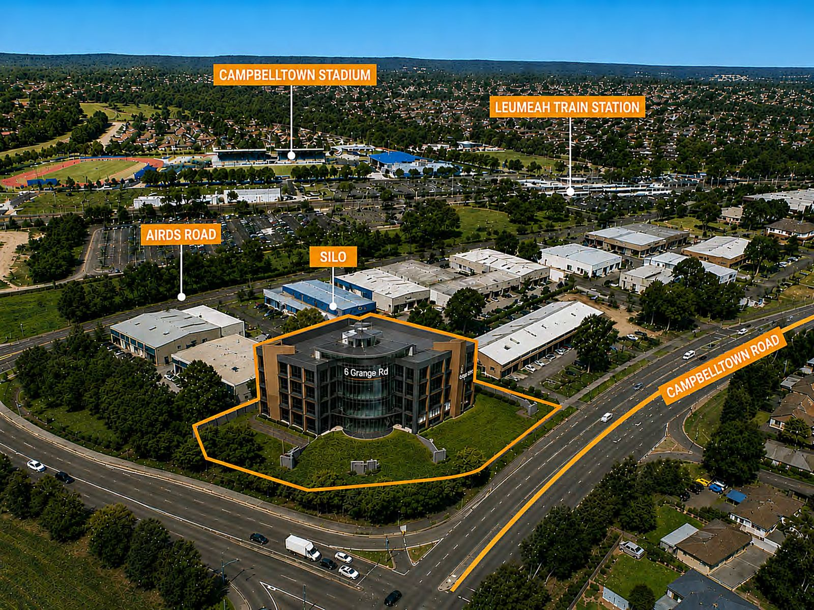
Campbelltown is a major regional centre roughly 55km south-west of Sydney's CBD and a key residential, commercial and employment hub for Sydney's south-west.
캠벨타운은 시드니 CBD에서 남서쪽으로 약 55km 떨어진 주요 지역 중심지이자, 시드니 남서부의 핵심 주거·상업·고용 거점입니다.
Campbelltown 位于悉尼 CBD 西南约 55 公里，是重要的区域中心，也是悉尼西南部核心的居住、商业与就业据点。
Campbelltown 位於悉尼 CBD 西南約 55 公里，是重要的區域中心，也是悉尼西南部核心的居住、商業與就業據點。
Ongoing housing development and urban renewal across established and emerging communities continue to attract new residents, lifting demand for household and business storage.
기존 및 신규 지역의 지속적인 주택 개발과 도시 재생이 새로운 주민을 끌어들이며, 가정용·사업용 보관 수요를 함께 끌어올리고 있습니다.
既有与新兴片区持续的住宅开发与城市更新吸引新居民迁入，同时带动家庭与商业的仓储需求。
既有與新興片區持續的住宅開發與城市更新吸引新居民遷入，同時帶動家庭與商業的倉儲需求。
The rise of online retail has created a wave of small businesses needing somewhere to hold inventory and run shipping operations.
온라인 리테일 확산으로 재고 보관과 배송 운영 공간이 필요한 소상공인이 크게 늘었습니다.
线上零售扩张，使需要库存存放与发货运营空间的小微企业大幅增加。
線上零售擴張，使需要庫存存放與發貨運營空間的小微企業大幅增加。
NSW Government investment in road, rail, health and education — including upgrades to Campbelltown Hospital and the M5 motorway extension — continues to strengthen the area's appeal.
캠벨타운 병원 확충과 M5 고속도로 연장을 포함한 NSW 주정부의 도로·철도·의료·교육 투자가 지역 경쟁력을 지속적으로 높이고 있습니다.
NSW 州政府在道路、铁路、医疗与教育方面的投入 —— 包括 Campbelltown 医院扩建与 M5 高速延伸 —— 持续提升区域竞争力。
NSW 州政府在道路、鐵路、醫療與教育方面的投入 —— 包括 Campbelltown 醫院擴建與 M5 高速延伸 —— 持續提升區域競爭力。
As baby boomers downsize their homes, furniture and belongings that no longer fit create sustained demand for secure storage.
베이비부머 세대가 주거 규모를 줄이면서, 새 집에 들어가지 않는 가구와 물품에 대한 보관 수요가 꾸준히 발생합니다.
随着婴儿潮世代缩减居住面积，新居容纳不下的家具与物品持续产生仓储需求。
隨着嬰兒潮世代縮減居住面積，新居容納不下的傢俱與物品持續產生倉儲需求。
Silo Storage has a completed portfolio across the Illawarra, Shoalhaven and South-West Sydney, with a pipeline of further projects in the Sydney regions.
Silo Storage는 일라와라, 쇼얼헤이븐, 시드니 남서부에 걸쳐 완공 실적을 보유하고 있으며, 시드니 권역에 추가 프로젝트가 예정되어 있습니다.
Silo Storage 在 Illawarra、Shoalhaven 与悉尼西南部均有建成业绩，并在悉尼区域储备了更多项目。
Silo Storage 在 Illawarra、Shoalhaven 與悉尼西南部均有建成業績，並在悉尼區域儲備了更多項目。
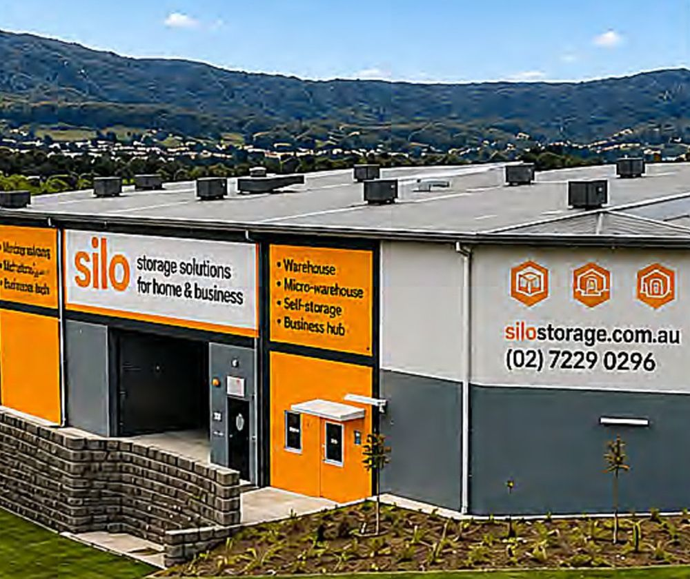
A modern facility just south of Wollongong providing storage and micro-warehouse space for personal and business customers.
울런공 남쪽에 위치한 현대적 시설로, 개인 및 사업자 고객에게 스토리지와 마이크로 창고 공간을 제공합니다.
位于 Wollongong 南侧的现代化设施，为个人与商业客户提供仓储与微型仓库空间。
位於 Wollongong 南側的現代化設施，爲個人與商業客戶提供倉儲與微型倉庫空間。
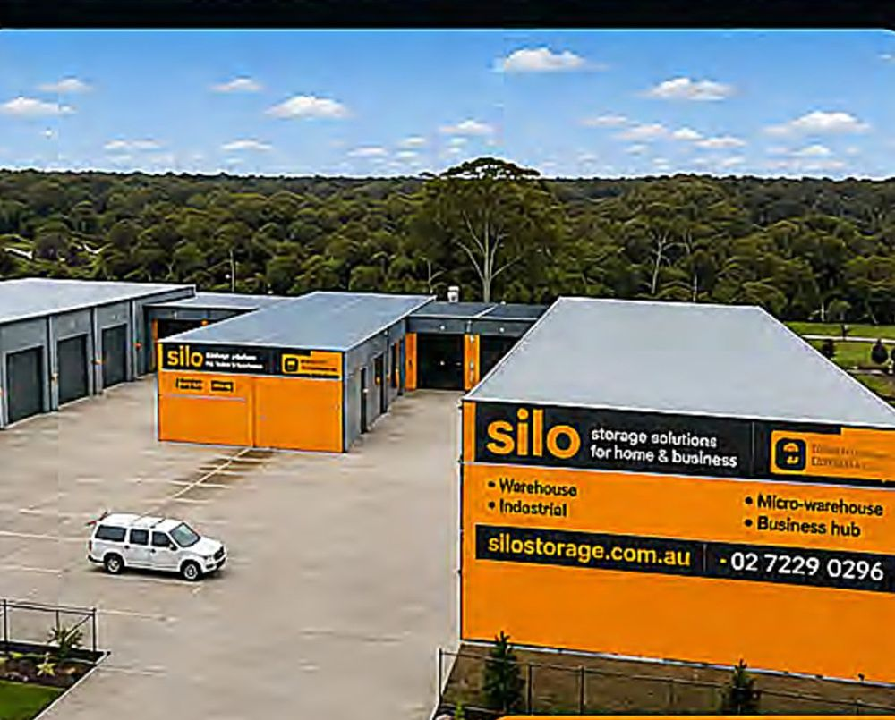
A mix of warehouse and micro-warehouse units serving the local Huskisson market.
허스키슨 지역 시장을 대상으로 창고와 마이크로 창고 유닛을 함께 공급합니다.
面向 Huskisson 本地市场，同时提供仓库与微型仓库单元。
面向 Huskisson 本地市場，同時提供倉庫與微型倉庫單元。
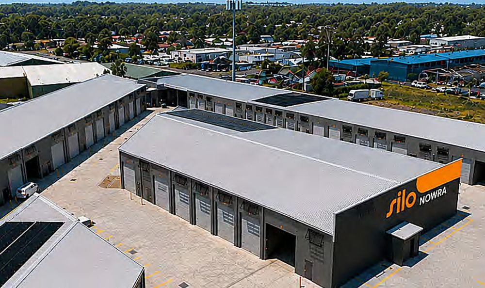
Delivering warehouses, micro-warehouses and super storage units in the Nowra regional centre for light industry and small business hubs.
나우라 지역 중심부에 경공업과 소규모 비즈니스 허브를 위한 창고, 마이크로 창고, 대형 스토리지 유닛을 공급했습니다.
于 Nowra 区域中心为轻工业与小型商业枢纽提供仓库、微型仓库与大型仓储单元。
於 Nowra 區域中心爲輕工業與小型商業樞紐提供倉庫、微型倉庫與大型倉儲單元。
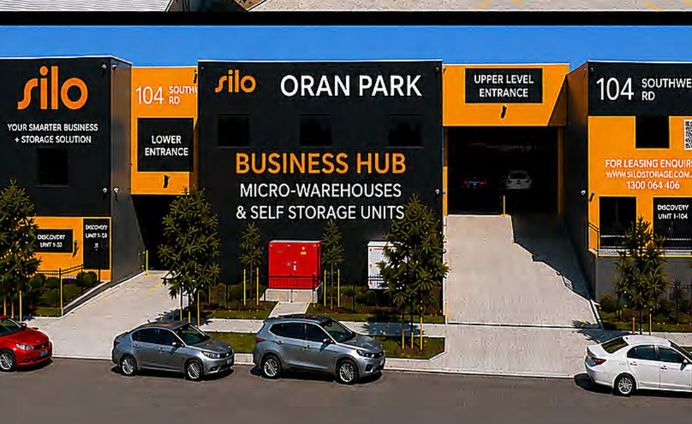
A flagship South-West Sydney delivery across two facilities at 98 and 104 Southwell Road, answering demand from trades, e-commerce operators and households.
98·104 Southwell Road 두 개 시설로 조성된 시드니 남서부 대표 프로젝트로, 트레이드·이커머스·가정 수요에 대응합니다.
由 98 与 104 Southwell Road 两处设施组成的悉尼西南代表项目，对应技术工种、电商与家庭需求。
由 98 與 104 Southwell Road 兩處設施組成的悉尼西南代表項目，對應技術工種、電商與家庭需求。
The Silo Storage brand has an extensive record of delivering industrial warehouses, micro-warehouses and strata self-storage projects across NSW, backed by over 40 years of experience and more than $600 million in completed residential, commercial and industrial development.
Silo Storage는 NSW 전역에서 산업용 창고, 마이크로 창고, 스트라타 셀프 스토리지 프로젝트를 공급해 온 브랜드로, 40년 이상의 경험과 6억 달러 이상의 주거·상업·산업 개발 완공 실적을 보유하고 있습니다.
Silo Storage 是在 NSW 各地供应工业仓库、微型仓库与分契式自助仓储项目的品牌，拥有逾 40 年经验及逾 6 亿澳元的住宅、商业与工业开发建成业绩。
Silo Storage 是在 NSW 各地供應工業倉庫、微型倉庫與分契式自助倉儲項目的品牌，擁有逾 40 年經驗及逾 6 億澳元的住宅、商業與工業開發建成業績。
An in-house team of builders, architects, engineers, marketers, property managers and sales professionals works together on each project — and a specialist property management team can manage units on behalf of owners after settlement.
시공, 설계, 엔지니어링, 마케팅, 자산관리, 세일즈 전문 인력이 사내에서 함께 프로젝트를 진행하며, 결제 이후에는 전문 자산관리 팀이 소유주를 대신해 유닛을 관리할 수 있습니다.
施工、设计、工程、市场推广、资产管理与销售的专业团队于内部协同推进项目；交割后，专业资产管理团队可代业主管理单元。
施工、設計、工程、市場推廣、資產管理與銷售的專業團隊於內部協同推進項目；交割後，專業資產管理團隊可代業主管理單元。
For unit availability, floor plans and sizes, please get in touch. Pricing information is available on request. Bilingual consultation available in English and Korean.
유닛 재고, 평면도, 면적은 문의해 주시면 안내해 드립니다. 가격 정보는 문의 시 제공됩니다. 한국어·영어 상담 모두 가능합니다.
单元房源、平面图与面积，欢迎咨询获取。价格信息于咨询时提供。提供中文、英文及韩文咨询服务。
單元房源、平面圖與面積，歡迎諮詢獲取。價格信息於諮詢時提供。提供中文、英文及韓文諮詢服務。
Information contained on this page is correct at the time of production (June 2026) and is provided for marketing purposes only. Sections may be amended without notice in response to changing circumstances or for any other reason. Images are artist impressions only and exact details should be confirmed with a Silo agent. This page does not constitute financial, legal or taxation advice — please obtain independent advice before making any decision. Forise Group acts as selling agent.
본 페이지의 정보는 제작 시점(2026년 6월) 기준으로 정확하며 마케팅 목적으로만 제공됩니다. 상황 변화 또는 기타 사유로 사전 예고 없이 변경될 수 있습니다. 이미지는 작가 상상도이며 정확한 사항은 Silo 담당자를 통해 확인하시기 바랍니다. 본 페이지는 금융·법률·세무 자문이 아니므로, 결정 전 반드시 독립적인 전문가 자문을 받으시기 바랍니다. 포라이즈 그룹은 판매 에이전트로 활동합니다.
本页面信息以制作时点（2026 年 6 月）为准，仅为市场推广之用。可能因情况变化或其他原因恕不另行通知而变更。图像为作家想象图，准确事项请通过 Silo 负责人确认。本页面不构成金融、法律或税务建议，决策前请务必寻求独立专业意见。Forise Group 为销售代理。
本頁面信息以製作時點（2026 年 6 月）爲準，僅爲市場推廣之用。可能因情況變化或其他原因恕不另行通知而變更。圖像爲作家想象圖，準確事項請通過 Silo 負責人確認。本頁面不構成金融、法律或稅務建議，決策前請務必尋求獨立專業意見。Forise Group 爲銷售代理。